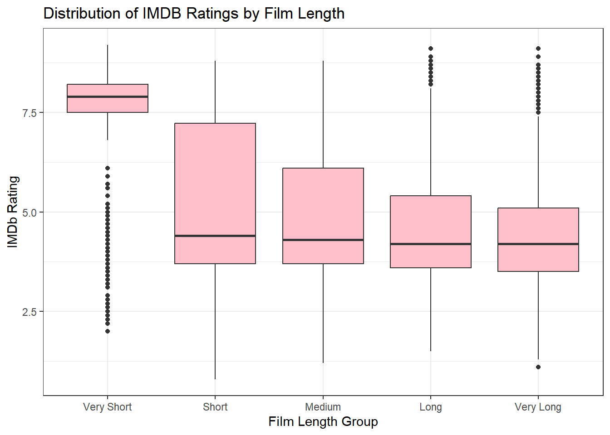
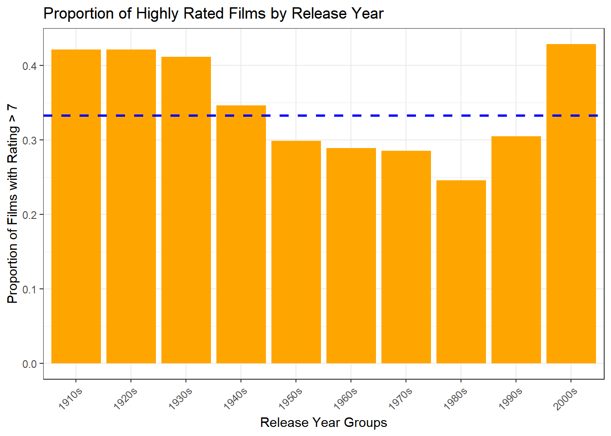
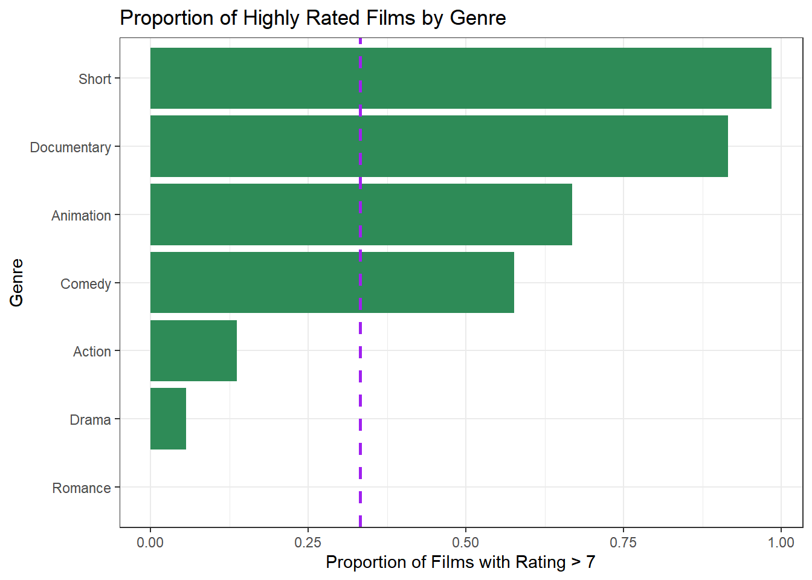
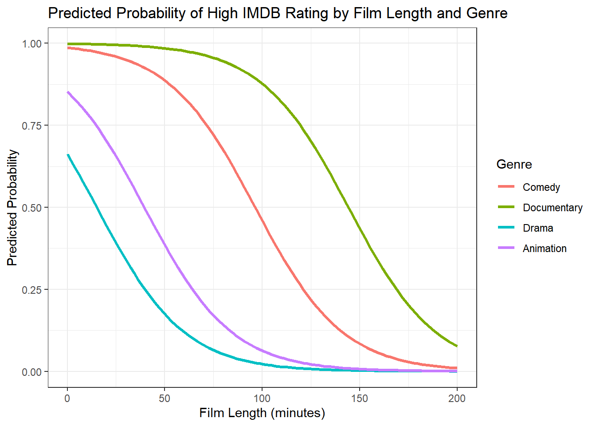

film_id year length budget votes genre rating
1 5993 1943 65 15.5 42 Action 7.6
2 37190 1961 87 12.3 6 Drama 6.0
3 43646 1987 79 16.4 161 Action 7.5
4 28476 1976 NA 12.2 5 Documentary 8.0
5 23975 1982 88 12.5 97 Action 3.5
6 50170 1936 NA 7.0 146 Drama 4.4Group_8_Analysis
The Dataset
The dataset used in this analysis comes from the IMDB film database.
It contains information about films that have been released in cinemas.
For each film, several characteristics are recorded, including the year of release, film length, production budget, number of viewer votes, film genre, and IMDb rating.
Inspect the dataset
After loading the dataset, we inspect its structure to understand the variables contained in the dataset and their data types.
The dataset contains several variables describing characteristics of films, including release year, film length, production budget, number of votes, film genre, and IMDB rating. These variables will later be used as predictors in the statistical model.
From the structure output, we can observe that variables such as year, length, budget, votes, and rating are numeric variables, while genre is a categorical variable describing the type of film.
These variables will later be used as predictors in the statistical model.
Which film properties influence whether a film receives an IMDB rating greater than 7?
Research Question
The main aim of this analysis is to investigate which characteristics of films influence whether a film receives an IMDB rating greater than 7.
In particular, we are interested in examining how variables such as film length, production budget, number of votes, genre, and release year may affect the probability that a film achieves a high rating.
To address this question, we will use a Generalised Linear Model (GLM) with a logistic link function.
Exploratory Plot
Before fitting a statistical model, it is useful to explore the relationships between the response variable and potential predictors.
Votes and High IMDB Ratings
The number of votes may reflect a film’s popularity or level of audience engagement. To explore this relationship, films were grouped based on their number of votes and the proportion of highly rated films (IMDB rating > 7) was calculated for each group.
The approximate vote ranges for the five groups are:
Very Low: 5-10 votes
Low: 10-20 votes
Medium: 20-47 votes
High: 47-174 votes
Very High: above 174 votes.

Table 1 shows the proportion of highly rated films across different vote groups. The dashed horizontal line represents the overall proportion of highly rated films in the dataset.
The plot suggests that the proportion of highly rated films varies across vote groups.
Some groups appear to have slightly higher proportions of highly rated films than others, although the differences are not very large.
Film Length and IMDB Ratings
Film length may influence audience perception of a movie. To explore this relationship, film length is grouped into five categories using quantile-based cut-offs so that each group contains approximately 20% of the films in the dataset.

Table 2 presents the distribution of IMDB ratings across film length groups using boxplots. The median ratings and overall distributions appear relatively similar across most groups.
Although very short films appear to have slightly higher median ratings, the overall differences between groups are not substantial. This suggests that film length may not have a strong relationship with IMDb ratings.
Release Year and High IMDB Ratings
Release year may influence how films are rated. To explore this, films were grouped by release decade and the proportion of highly rated films (IMDB rating > 7) was calculated for each group.
Very early decades contained only a small number of films, so films released before 1910 were excluded from this plot to provide a more stable comparison across release periods.

Table 3 shows the proportion of highly rated films across different release decades. The dashed horizontal line represents the overall proportion of highly rated films in the dataset.
Earlier decades appear to have slightly higher proportions of highly rated films, while films released from the 1950s to the 1980s show relatively lower proportions.
However, the differences between decades are not extremely large, indicating that release year alone may not strongly determine whether a film receives a high IMDb rating.
Film Genre and High IMDB Ratings
Film genre may influence how movies are perceived by audiences. Different genres may attract different audiences and may vary in storytelling style, which could affect IMDB ratings.

Table 4 shows the proportion of highly rated films across different genres. The dashed horizontal line represents the overall proportion of highly rated films in the dataset.
Some genres appear to have very high or very low proportions of highly rated films.
However, this may partly be due to the small number of films in certain genres, which can lead to unstable proportions. Overall, while some variation exists across genres, genre alone may not strongly determine whether a film receives a high IMDB rating.
Selection of Candidate Variables
Based on the exploratory analysis, several variables were identified as potential predictors of whether a film receives an IMDb rating greater than 7. These variables include:
- votes
- film length
- release year
- genre.
These variables will be used as candidate predictors in the logistic regression model.
Logistic Regression Model
To investigate the factors associated with whether a film receives a high IMDB rating, a logistic regression model was fitted.
The response variable is a binary indicator of whether a film has a rating greater than 7. The candidate predictor variables identified in the exploratory analysis include the number of votes, film length, release year, and genre.
| Variable | Odds Ratio | Std Error | z value | p value |
|---|---|---|---|---|
| (Intercept) | 0.000 | 5.064 | -3.115 | 0.002 |
| votes | 1.000 | 0.000 | 0.064 | 0.949 |
| length | 0.956 | 0.003 | -14.971 | 0.000 |
| year | 1.009 | 0.003 | 3.472 | 0.001 |
| genreAnimation | 0.746 | 0.287 | -1.023 | 0.306 |
| genreComedy | 9.359 | 0.138 | 16.153 | 0.000 |
| genreDocumentary | 78.790 | 0.374 | 11.688 | 0.000 |
| genreDrama | 0.253 | 0.215 | -6.403 | 0.000 |
| genreRomance | 0.000 | 421.588 | -0.035 | 0.972 |
| genreShort | 17.505 | 0.747 | 3.834 | 0.000 |
The logistic regression results are summarized in Table 5. Film length, release year, and several genres show statistically significant associations with the probability of receiving a high IMDB rating (p < 0.05).
However, the number of votes is not statistically significant (p = 0.949). Therefore, the variable votes was removed and a simplified model was fitted.
Simplified Logistic Regression Model
Since the number of votes was not statistically significant in the full model, it was removed and a simplified logistic regression model was fitted using the remaining predictors: film length, release year, and genre.
| Variable | Estimate | Std Error | z value | p value |
|---|---|---|---|---|
| (Intercept) | -15.810 | 5.035 | -3.140 | 0.002 |
| length | -0.044 | 0.003 | -15.037 | 0.000 |
| year | 0.009 | 0.003 | 3.497 | 0.000 |
| genreAnimation | -0.292 | 0.286 | -1.021 | 0.307 |
| genreComedy | 2.237 | 0.138 | 16.186 | 0.000 |
| genreDocumentary | 4.367 | 0.374 | 11.688 | 0.000 |
| genreDrama | -1.376 | 0.215 | -6.404 | 0.000 |
| genreRomance | -14.626 | 421.632 | -0.035 | 0.972 |
| genreShort | 2.863 | 0.747 | 3.835 | 0.000 |
Table 6 indicates that film length and release year are significant predictors of whether a film receives a high IMDb rating (p < 0.001).
Longer films tend to be less likely to receive ratings above 7, while more recently released films are slightly more likely to receive higher ratings.
In addition, differences across genres suggest that the likelihood of receiving high ratings varies depending on film type.
Model Comparison
To better illustrate the effect of variable selection, the coefficients of the full model and the simplified model are compared in @glm-sum.
| Predictor | Full Model | Final Model |
|---|---|---|
| (Intercept) | -15.775 | -15.810 |
| votes | 0.000 | NA |
| length | -0.045 | -0.044 |
| year | 0.009 | 0.009 |
| genreAnimation | -0.293 | -0.292 |
| genreComedy | 2.236 | 2.237 |
| genreDocumentary | 4.367 | 4.367 |
| genreDrama | -1.376 | -1.376 |
| genreRomance | -14.626 | -14.626 |
| genreShort | 2.862 | 2.863 |
Table 7 compares the estimated coefficients between the full model and the simplified model.
The results show that removing the non-significant variable (votes) does not substantially change the estimated coefficients of the remaining predictors. This suggests that the simplified model provides a more parsimonious representation while maintaining similar estimated effects.
Predicted Probabilities
To further illustrate the fitted logistic regression model, predicted probabilities were calculated across a range of film lengths while holding release year constant at its mean value.
Predicted probabilities were plotted for several selected genres to visualize how the probability of receiving a high IMDB rating varies with film length and genre.

Table 8 shows the predicted probability of receiving a high IMDb rating across different film lengths for selected genres.
Release year is not shown in the figure because it was held constant at its mean value when calculating predicted probabilities. This allows the effects of film length and genre on the predicted probability to be visualized more clearly while still using the full simplified model.
The predicted probability generally decreases as film length increases, indicating that longer films are less likely to receive ratings above 7. Differences across genres are also evident, with some genres consistently showing higher predicted probabilities than others across the range of film lengths.
Interpretation of Odds Ratios
To aid interpretation of the logistic regression model, the estimated coefficients were transformed into odds ratios by taking their exponential values.
| Predictor | Estimate | Odds Ratio | p value |
|---|---|---|---|
| (Intercept) | -15.810 | 0.000 | 0.002 |
| length | -0.044 | 0.956 | 0.000 |
| year | 0.009 | 1.009 | 0.000 |
| genreAnimation | -0.292 | 0.747 | 0.307 |
| genreComedy | 2.237 | 9.364 | 0.000 |
| genreDocumentary | 4.367 | 78.785 | 0.000 |
| genreDrama | -1.376 | 0.253 | 0.000 |
| genreRomance | -14.626 | 0.000 | 0.972 |
| genreShort | 2.863 | 17.514 | 0.000 |
Table 9 presents the odds ratios from the simplified logistic regression model.
Film length shows an odds ratio below 1, indicating that longer films are less likely to receive ratings above 7. In contrast, more recent films and some genres have higher odds of receiving high ratings.
Model Limitation
Although the logistic regression model provides useful insights, several limitations should be noted.
First, the analysis is based on observational data and therefore cannot establish causal relationships between predictors and IMDb ratings.
Second, some genres contain relatively small numbers of films, which may affect the stability of the estimated coefficients.
Finally, other potentially important factors, such as director reputation or production budget, were not included in the dataset and may also influence film ratings.
Conclusion
This study examined factors associated with whether a film receives a high IMDB rating.
The results of the logistic regression analysis suggest that film length, release year, and genre are important predictors of high ratings. Longer films tend to have lower probabilities of receiving ratings above 7, while more recently released films show slightly higher probabilities. In addition, some genres such as comedy and documentary are more likely to receive higher ratings compared with the reference genre.
Overall, the findings suggest that both film characteristics and genre differences play a role in determining audience ratings.